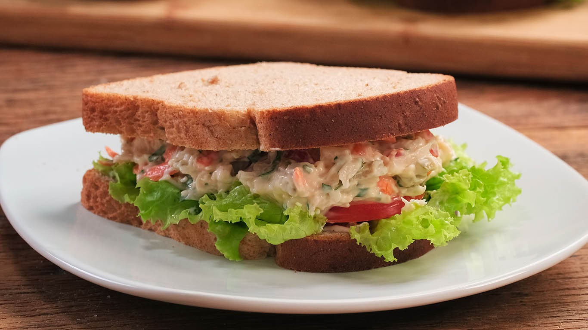

Sanduíche Natural de Frango
Ingredientes (10 porções):
- 1 pacote de pão de forma
- 1 lata de creme de leite
- 1 peito de frango
- 2 colheres de salsinha desidratada ou da fresca
- 2 cenouras grandes
- 1 maionese grande
- 1 pé de alface crespa
Modo de Preparo ◔:
Tempo: 10 min
- Tire as bordas do pão.
- Rale as cenouras.
- Pique o alface.
- Cozinhe o frango com sal e depois de cozido desfie.
- Em um recipiente coloque o frango desfiado, a maionese, a cenoura ralada, o creme de leite e a salsa, mexa tudo até ficar bem misturado.
- Em uma forma ou um recipiente de vidro, de preferência retangular, coloque uma camada de pão e acrescente o recheio e por cima coloque o alface e depois o pão.
- Após todos os pães prontos, se desejar, corte ao meio ou corte cada um deles em 4 partes.
- Com o alface que sobrou decore a forma em volta.